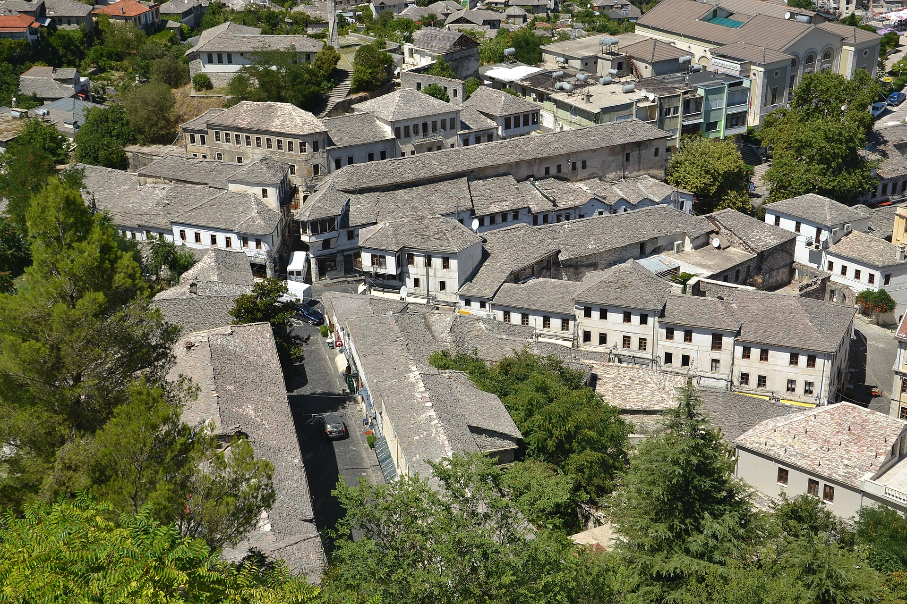

Marked on the map · 2 pins
Nicole's own pins from the map list — each opens straight in Google Maps.

No. 16 · Albania · The stone city and the Kurvelesh highlands
The UNESCO stone city of southern Albania — slate roofs stacked up the hillside under a fortress — plus one wild highland hike pinned up in the Kurvelesh mountains behind it.
The list
| No. | Thing | Notes |
|---|---|---|
| 1 | Gjirokastër castle | The hilltop fortress with a Cold War fighter plane parked inside and views over the whole valley. |
| 2 | The old bazaar & Skenduli house | Walk the cobbled lanes and visit a fortified Ottoman house — the best window into how the town lived. |
| 3 | Peshtura waterfall hike | Half-day walk from Progonat village through the Kurvelesh gorge. Spectacular after rain, a dry trickle in summer — check the season. |
Eat & drink: qifqi (rice balls) and gliko, Gjirokastër's own traditions; lek cash for the mountain villages.Field note · Balkans 2027
Marked on the map · 2 pins
Nicole's own pins from the map list — each opens straight in Google Maps.
| No. | Pin | Open |
|---|---|---|
| 1 | GjirokastërThe stone old town, castle on top, bazaar in between. | Maps ↗ |
| 2 | Ujëvara e Peshturës, Progonat"Waterfall hike (no waterfall in dry season)" — the Peshtura falls in the highlands north of Gjirokastër. | Maps ↗ |